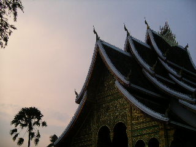
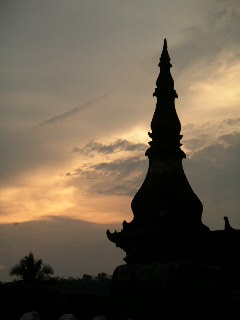
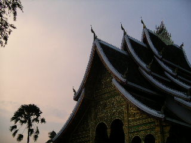
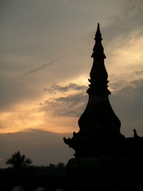
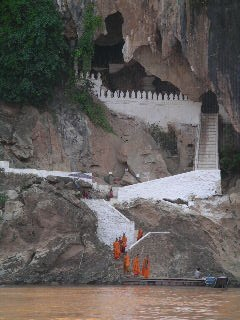
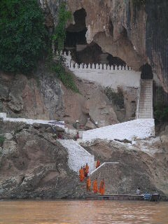
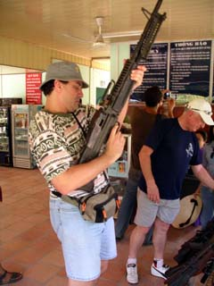

Tuesday, May 04, 2004
Skills to pay the bills
Tamara and I have been spending the last few days hanging out in Chang Mai doing some courses. Tamara is now a fully qualified Thai Massues, whilst I am able to slap together a Pad Thai meal as quick as you like.
Stay tuned for details on our All You Can Eat Pad Thai and Massage shop which will be opening in Melbourne shortly. :)
Stay tuned for details on our All You Can Eat Pad Thai and Massage shop which will be opening in Melbourne shortly. :)
Some more sights around Chang Mai
Tuesday, April 27, 2004
Kym goes "Cyclo"
Today Tamara, Mark and myslef took in some of the sights of Luang Prabang, the UNESCO World Heritage listed town of Laos. What a beautiful place!
Of course the only real way to get around is by bicycle -- Problem is there was three of us and only two bikes... No Problem I just went Cyclo for the day:


Of course the only real way to get around is by bicycle -- Problem is there was three of us and only two bikes... No Problem I just went Cyclo for the day:
Sights of Luang Prabang


Bon Voyage Mark
We suspected Mark wasn't going to be getting many more luxuries over the coming weeks as the Hot Rock crew headed to the China border so we decided to take him out to the swankiest place in all of Luung Prabang and see what trouble we could get him in.
In scenes reminiscent of Mr. Creosote in Monty Python's Meaning of Life we let him order what he wanted.
A drink the size of his head
Go the banquet option
Just one more tasty morsel -- it's only "wafer-thin"
*** other photos not suitable for family website *** :)
In scenes reminiscent of Mr. Creosote in Monty Python's Meaning of Life we let him order what he wanted.
A drink the size of his head
Go the banquet option
Just one more tasty morsel -- it's only "wafer-thin"
*** other photos not suitable for family website *** :)
Monday, April 26, 2004
The Royal We
We arrived in the beautiful royal city of Luang Prabang, a UNESCO world hertiage site. It is a perfect blend of French and Lao architecture. Today Kym and I went on a boneshaking tuk tuk ride to Pak Ou Caves. The caves are a religious site on the Mekong river, filled with buddha images. It was a very peaceful and spiritual place.

The Hot Rock crew were climbing near by, so we dropped in on them. They were doing some incredible safety-first operation creating a new route up a sheer rockface that jutted out of the river. (you can see one of the climbers in the picture below if you look carefully) Mark was belaying some adventure seeker so instead of interrupting him at this fairly important moment we decided to head off to Khang si falls.

Khang Si has got to be the coolest place in all of Lao. Crystal clear and frigid water splashes down a jungle covered cliff, it was enchanting.
Tomorrow we are exploring more of Luang Prabang and then it is off to Chiang Mai and Bangkok (on a great airline deal USD115 each! Two flights forthe price of one) before heading back home to Curtain Street.

The Hot Rock crew were climbing near by, so we dropped in on them. They were doing some incredible safety-first operation creating a new route up a sheer rockface that jutted out of the river. (you can see one of the climbers in the picture below if you look carefully) Mark was belaying some adventure seeker so instead of interrupting him at this fairly important moment we decided to head off to Khang si falls.
Khang Si has got to be the coolest place in all of Lao. Crystal clear and frigid water splashes down a jungle covered cliff, it was enchanting.
Tomorrow we are exploring more of Luang Prabang and then it is off to Chiang Mai and Bangkok (on a great airline deal USD115 each! Two flights forthe price of one) before heading back home to Curtain Street.
Hot Bike
After a day of tubing down the river and appreciating Vang Vieng's unusual and stunning topography, we camped with the Hot Rock team in readiness for the next day assault on the mountains. The Hot Rock crew are a great bunch of people, naturally obsessed with rock climbing and unnaturally with a board game called barricade.
 The drive up the royal road was incredible, amazing scenery, enormous jungle covered mountains. Also amazing was the assumption that anyone except a tour de france team could ride it. There was no level ground, a number of gigantic hills and very little water/ shaded areas en route. Also it is baking hot, in the low 40s during the day with 80% humidity. Only do this ride at this time of year if you are hard core hill climbing cyclist with a dehydration death wish. Another concern is the slash and burn deforestation in this part of Laos. It was very disturbing to see huge tracts of land burnt out. This is clearly a natural disaster waiting to happen.
The drive up the royal road was incredible, amazing scenery, enormous jungle covered mountains. Also amazing was the assumption that anyone except a tour de france team could ride it. There was no level ground, a number of gigantic hills and very little water/ shaded areas en route. Also it is baking hot, in the low 40s during the day with 80% humidity. Only do this ride at this time of year if you are hard core hill climbing cyclist with a dehydration death wish. Another concern is the slash and burn deforestation in this part of Laos. It was very disturbing to see huge tracts of land burnt out. This is clearly a natural disaster waiting to happen.
The ride in the big red truck was lots of fun, we played the aforementioned barricade, listened to many rockclimbing stories, watched incredibly buff rock climbers do chin ups, lots more fun than the chicken bus! Thanks for the ride Hot Rock!
The drive up the royal road was incredible, amazing scenery, enormous jungle covered mountains. Also amazing was the assumption that anyone except a tour de france team could ride it. There was no level ground, a number of gigantic hills and very little water/ shaded areas en route. Also it is baking hot, in the low 40s during the day with 80% humidity. Only do this ride at this time of year if you are hard core hill climbing cyclist with a dehydration death wish. Another concern is the slash and burn deforestation in this part of Laos. It was very disturbing to see huge tracts of land burnt out. This is clearly a natural disaster waiting to happen. The ride in the big red truck was lots of fun, we played the aforementioned barricade, listened to many rockclimbing stories, watched incredibly buff rock climbers do chin ups, lots more fun than the chicken bus! Thanks for the ride Hot Rock!
Friday, April 23, 2004
Bomb Casings, a Disco Chicken and Safety First Diving
The next morning we decided that the 110km ride was out of the question given our physical state and the heat. We decided to take the boat across the Nam Ngum Resevior to Ban Tan Heua and ride the 25kms to Vang Vieng, the stop for the night.
Over breakfast we saw a bomb casing being lifted from the water. Laos has the dubious distinction of being the most bombed country on earth (per head of capita). Laos was known as the "Other Theatre" during the Vietnam War and was secretly bombed for 17 years. There were no rules of engagement so everything here was free game, resulting in many of Laos cultural icons being destroyed.
Also a breakfast we experienced disco chicken, a pet chicken that loved to boogie to Lao doof music. And boogie she did!
After that bizarre moment, we hopped on the boat and started sailing throught the submerged forest. For reasons we have yet to discover, when building the dam the Lao flooded a teak forest. As teak is a highly sought after wood, there is a huge industry involving underwater logging. Sounds dangerous? Sure was! This operation was definitely not safety first unless you call diving with a 6 foot saw, some heavy machinery and sub standard diving equipment in a submerged forest safe!
It was another microwave ride to the incredible town of Vang Vieng. The scenery here is amazing, huge limestone towers covered in jungle arising from the Nam Son river.
We met up with the crew from Hot Rock (hardcore, world travelling rock climbers with a big red truck), they have kindly agreed to take us to Luang Prabang, so next up HOT BIKE!
Over breakfast we saw a bomb casing being lifted from the water. Laos has the dubious distinction of being the most bombed country on earth (per head of capita). Laos was known as the "Other Theatre" during the Vietnam War and was secretly bombed for 17 years. There were no rules of engagement so everything here was free game, resulting in many of Laos cultural icons being destroyed.
Also a breakfast we experienced disco chicken, a pet chicken that loved to boogie to Lao doof music. And boogie she did!
After that bizarre moment, we hopped on the boat and started sailing throught the submerged forest. For reasons we have yet to discover, when building the dam the Lao flooded a teak forest. As teak is a highly sought after wood, there is a huge industry involving underwater logging. Sounds dangerous? Sure was! This operation was definitely not safety first unless you call diving with a 6 foot saw, some heavy machinery and sub standard diving equipment in a submerged forest safe!
It was another microwave ride to the incredible town of Vang Vieng. The scenery here is amazing, huge limestone towers covered in jungle arising from the Nam Son river.
We met up with the crew from Hot Rock (hardcore, world travelling rock climbers with a big red truck), they have kindly agreed to take us to Luang Prabang, so next up HOT BIKE!
Northern Wonders 1 Cyclists 0
It was a 10 hour ride of epic proportions. Described in the Lonely Planet as "relatively easy", a description we would soon discover as grossly erroneous, we set off on Day 1 of the Northern Wonders Tour. The ride was first quiet and beautiful, gliding through small towns and low lying jungle. The Lao people are so friendly and laid back, incredible given their recent history.
However, there was a general upward sweep to the road and it was getting hot, very hot. In fact by 10 am, Kym and I had started riding from shade to shade. Hitting the low 40s at 11.30 with another 30kms to go, we hit the "moderate climbs" of the day. It felt like we were breathing fire, would would stop for a drink and the water would be hot. At the end of one climb we came upon a police outpost selling boiling 7UP. All these guys were taking it easy watching Bollywood movies and staying out of the sun, which was of course an excellent idea.
Determined to ride the last 10km to our stopping point, we finally made it to the Dam, the other side of which was the town with the hotel, the shower and the copious amounts of cold water. However, between us was the "hard climb". At this stage, we had ridden 90kms in the baking sun and the hill was VERTICAL. I had to get off the bike and walk it up. At the end of this ride we were completely spent and despite guzzling water all day, having a close call with dehydration. All we managed to do was choke down some food and gastrolyte and go to sleep.
Safety First -- Teaching small children how to operate machinery
However, there was a general upward sweep to the road and it was getting hot, very hot. In fact by 10 am, Kym and I had started riding from shade to shade. Hitting the low 40s at 11.30 with another 30kms to go, we hit the "moderate climbs" of the day. It felt like we were breathing fire, would would stop for a drink and the water would be hot. At the end of one climb we came upon a police outpost selling boiling 7UP. All these guys were taking it easy watching Bollywood movies and staying out of the sun, which was of course an excellent idea.
Determined to ride the last 10km to our stopping point, we finally made it to the Dam, the other side of which was the town with the hotel, the shower and the copious amounts of cold water. However, between us was the "hard climb". At this stage, we had ridden 90kms in the baking sun and the hill was VERTICAL. I had to get off the bike and walk it up. At the end of this ride we were completely spent and despite guzzling water all day, having a close call with dehydration. All we managed to do was choke down some food and gastrolyte and go to sleep.
Safety First -- Teaching small children how to operate machinery
Tuesday, April 20, 2004
Beer Lao
Having survived the notorious Lao Aviation (safety records are not published, but the Airbus we road on was fine) we arrived in Lao. Contrary to what we had been told in Hanoi (initial assessment $70USD), our bikes rode free! We then provided entertainment for the local taxi drivers as we assembled the bikes. One comment (followed by shrieking laughter) "you paid $500USD for that bike, you could have bought 10 bikes for that price!". Which is basically true if you want to ride a 38kg Vietnamese "Iron Horse" as seen on The Ho Chi Minh Trail during the American War.
Flying to Laos was an A1 decision, 50 minutes no hassle, as opposed to 22 hours of chicken bus PAIN.
Kym and I then proceeded to quickly ride into town. Along the road we began to notice a few glaring differences between cycling in Laos and cycling in Vietnam, including the strange tendency for Lao to obey the road rules and the distinct absence of the airhorn. We then met up with our former housemate and all round great guy, Mark the hard core climber, and proceeded to have a great day out with him drinking copious amounts of Beerlao.
We have been experiencing a bit of culture shock as Laos is very laid back. Lao people are very friendly and Vientiene is a very modern town, practically everyone on the roads is driving a late model fourwheel drive. The shops and restraunts are very chi chi as well.
Today we had an OUTRAGEOUS breakfast with Mark. The bakery goods were great, the coffee had real milk and the prices were, well, western. After this we posted Mark the Vang Vieng on the air-conditioned bus (scratch what we said about him being hard!) Then we went on the "Bridge to Buddhas" ride out to Buddha Park. This ride should not be undertaken in the heat of the day as there is basically no shade en route. Buddha park was bizarre, full of Hindu / Buddhist / Bad Acid Trip style concrete sculptures. If it wasn't for it's utter bizzareness it would be in competition for the "piss weak world" awards. Whilst we were there the Presidents wife made a visit, a rolling procession of official vehicles. Her car was a late model Mercedes Benz. I think when the leadership is riding around in one of those vehicles, the Peoples' Revolution is officially over.


Next the gruelling start of Northern Wonders, an epic 100km journey to Na Nam. Fortunately the local supermarket has Uncle Toby choc chip bars and Gatorade, so we should be right!
Flying to Laos was an A1 decision, 50 minutes no hassle, as opposed to 22 hours of chicken bus PAIN.
Kym and I then proceeded to quickly ride into town. Along the road we began to notice a few glaring differences between cycling in Laos and cycling in Vietnam, including the strange tendency for Lao to obey the road rules and the distinct absence of the airhorn. We then met up with our former housemate and all round great guy, Mark the hard core climber, and proceeded to have a great day out with him drinking copious amounts of Beerlao.
We have been experiencing a bit of culture shock as Laos is very laid back. Lao people are very friendly and Vientiene is a very modern town, practically everyone on the roads is driving a late model fourwheel drive. The shops and restraunts are very chi chi as well.
Today we had an OUTRAGEOUS breakfast with Mark. The bakery goods were great, the coffee had real milk and the prices were, well, western. After this we posted Mark the Vang Vieng on the air-conditioned bus (scratch what we said about him being hard!) Then we went on the "Bridge to Buddhas" ride out to Buddha Park. This ride should not be undertaken in the heat of the day as there is basically no shade en route. Buddha park was bizarre, full of Hindu / Buddhist / Bad Acid Trip style concrete sculptures. If it wasn't for it's utter bizzareness it would be in competition for the "piss weak world" awards. Whilst we were there the Presidents wife made a visit, a rolling procession of official vehicles. Her car was a late model Mercedes Benz. I think when the leadership is riding around in one of those vehicles, the Peoples' Revolution is officially over.
Some sights around Vientiene
Next the gruelling start of Northern Wonders, an epic 100km journey to Na Nam. Fortunately the local supermarket has Uncle Toby choc chip bars and Gatorade, so we should be right!
Sunday, April 18, 2004
So Long Halong Bay
As reported in the last post, Kym and I decided to go on the sea kayaking adventure, it was a top decision by us as we had a FANTASTIC time.
It all started off whilst sharing a glass of bia hoi (the local home brew). A glass of bia hoi goes for the princely sum of 1500 VND (about 10 cents), so we were enjoying a few, where we met the other people on our tour, three Americans gentlemen (Chris, Eddie and Josh) and one crazy Englishman (Nick) (whom we have met before). A pair of Australian med students (Benni and Andrew) joined us as we set off for the "3 Day Tour".
We met our guide, the irrespresible Thuy, discover the beautiful base camp and got on the sea kayaks. It was a great way to see Halong Bay, words can't describe how incredible it is- check the photos out.
After a night of great company, we awoke to rain! Even though it was pouring, we hopped on the sea kayaks and got going. Fortunately the Americans had bought along a bottle of rum, so we were able to take regular stops to warm up. We explored cave tunnels and arches, not to mention battling the elements. It was a great day and a great trip. We learnt another Vietnamese phrase, Dep vai dai, which translates to "It is so beautiful, I am going to wet my pants". For those who appreciate independent travel this way of seeing Halong Bay was infinitely better than being on a boat for two days.
There were lots of great moments of comedy (too over the line for this family friendly website). It all ended with another jovial visit to Bia Hoi.
This might be our last post for a while as we are off to Vientiene, Laos to tackle the Northern Wonders Ride (will we survive the 130km hill route?) Find out in our next exciting post!
It all started off whilst sharing a glass of bia hoi (the local home brew). A glass of bia hoi goes for the princely sum of 1500 VND (about 10 cents), so we were enjoying a few, where we met the other people on our tour, three Americans gentlemen (Chris, Eddie and Josh) and one crazy Englishman (Nick) (whom we have met before). A pair of Australian med students (Benni and Andrew) joined us as we set off for the "3 Day Tour".
We met our guide, the irrespresible Thuy, discover the beautiful base camp and got on the sea kayaks. It was a great way to see Halong Bay, words can't describe how incredible it is- check the photos out.
After a night of great company, we awoke to rain! Even though it was pouring, we hopped on the sea kayaks and got going. Fortunately the Americans had bought along a bottle of rum, so we were able to take regular stops to warm up. We explored cave tunnels and arches, not to mention battling the elements. It was a great day and a great trip. We learnt another Vietnamese phrase, Dep vai dai, which translates to "It is so beautiful, I am going to wet my pants". For those who appreciate independent travel this way of seeing Halong Bay was infinitely better than being on a boat for two days.
There were lots of great moments of comedy (too over the line for this family friendly website). It all ended with another jovial visit to Bia Hoi.
This might be our last post for a while as we are off to Vientiene, Laos to tackle the Northern Wonders Ride (will we survive the 130km hill route?) Find out in our next exciting post!
Thursday, April 15, 2004
Hue to Go
The ride to Hue (rhymes with way) was another tough one, with rolling hills at the start of the ride, then a long, hot finish into Hue. By the end of this ride, we were ready for some time out of the saddle, so we decided to go on a moto tour of Hue (through Cafe on Thu Wheels). It was great, a really good way to catch the sights of Hue and a great break from the "butt wrenching terror of the saddle" (Kym's words!). The tombs and different places around Hue were very interesting and made a great day trip.
That night we hopped on the tourist bus to Hanoi, the illustrious capital of Vietnam. I use "tourist bus" in the loosest sense of the word as there were not very many tourists on it. I had a feeling there were dodgy deals going on, but we got to Hanoi in one piece at a ridiculous time in the morning.
Our first day in Hanoi, which is a beautiful city was marred slightly by the need to organise a tour of Halong Bay and flight to Vientiene. Both were fraught with difficulty. Everyone in Hanoi does a boat tour of Halong Bay you cannot walk 5 meters without being asked about it. We eventually decided on a 3 day seakayaking tour (time to break the arms and not the ass). We figure its the sea version of cycling. We are really looking forward to going, we have already met some of the group and they seem very nice.
Today, Hanoi exerted its considerable charm on us, we have really enjoyed a beautiful walking tour of the French Quarter.
Next Halong Bay Sea Adventures and then on to mysterious and reportedly baking hot Laos.
That night we hopped on the tourist bus to Hanoi, the illustrious capital of Vietnam. I use "tourist bus" in the loosest sense of the word as there were not very many tourists on it. I had a feeling there were dodgy deals going on, but we got to Hanoi in one piece at a ridiculous time in the morning.
Our first day in Hanoi, which is a beautiful city was marred slightly by the need to organise a tour of Halong Bay and flight to Vientiene. Both were fraught with difficulty. Everyone in Hanoi does a boat tour of Halong Bay you cannot walk 5 meters without being asked about it. We eventually decided on a 3 day seakayaking tour (time to break the arms and not the ass). We figure its the sea version of cycling. We are really looking forward to going, we have already met some of the group and they seem very nice.
Today, Hanoi exerted its considerable charm on us, we have really enjoyed a beautiful walking tour of the French Quarter.
Next Halong Bay Sea Adventures and then on to mysterious and reportedly baking hot Laos.
Hai Van Pass (or not to pass, that is the question)
Hai Van Pass is the climatic barrier between North and South Vietnam. Read that again -- clouds DO NOT go over "The Pass" -- but we did!
Richard De Boer holds the current record for the climb from sea to summit. As recorded by Mr. Pumpy:
De Boer completed the gruelling 9.3 km uphill stage in 35 minutes 40 seconds, cycling from the railway tracks to the top, fully loaded.
"I'm coming back next year to crack the 30 minute barrier!" said a pumped up De Boer, just before he was carried into the oxygen tent.
It ended up taking Tamara and I 1 hour 45 minutes from sea to summit (including a couple of rest stops and at least one quick dry-retch). It was a pretty tough ride, with the trucks and heat, the dry retching was from physical exertion.
Kym decided he would put his leg out to see if we could get a lift, needless to say we had to ride to the top. Amazingly, some enterprising ladies decided to hop off their motos and offer crap jewellery whilst Tamara was puking. We tried to explain that perhaps this was not the best time. To other cyclists out there, if you can do the hills, the Pass is no problem, just start early and go slowly up, you'll make it! The descent down the other side to Lang Co was breath taking -- or were we just out of breath!?!
Richard De Boer holds the current record for the climb from sea to summit. As recorded by Mr. Pumpy:
De Boer completed the gruelling 9.3 km uphill stage in 35 minutes 40 seconds, cycling from the railway tracks to the top, fully loaded.
"I'm coming back next year to crack the 30 minute barrier!" said a pumped up De Boer, just before he was carried into the oxygen tent.
It ended up taking Tamara and I 1 hour 45 minutes from sea to summit (including a couple of rest stops and at least one quick dry-retch). It was a pretty tough ride, with the trucks and heat, the dry retching was from physical exertion.
Kym decided he would put his leg out to see if we could get a lift, needless to say we had to ride to the top. Amazingly, some enterprising ladies decided to hop off their motos and offer crap jewellery whilst Tamara was puking. We tried to explain that perhaps this was not the best time. To other cyclists out there, if you can do the hills, the Pass is no problem, just start early and go slowly up, you'll make it! The descent down the other side to Lang Co was breath taking -- or were we just out of breath!?!
Friday, April 09, 2004
In search of China Beach
Our suits have been made, packaged and sent back to Australia. We can't wait to hop into them and prance around the loungeroom. Watchout Curtain Street!
The ride to Danang was a lovely 40km cruise along the beach. A very relaxing ride in preperation for the ominous Hai Van Pass that lurked ahead. We tried to find China beach (from TV fame) but failed miserably, well actually, we found the beach but couldn't find the accomodation.
In Danang we visited a "An Chay" (vegetarian) restuarant where we met the lovely Khiet who struck up a conversation with us and bought us lunch. Thanks Khiet!! We arranged to meet him, his wife Tam and his daughter Nhi that night for a cafe da.
What can I say, what a beautiful family. Even their names are beautiful: Khiet means "pure", Tam means "heart" and Nhi means "big heart". This family really showed us what wonderful people the Vietnamese are and we enjoyed a great night out with them. Thanks again Khiet, Tam and Nhi!!!
Tomorrow the Hai Van Pass... gulp!!
The ride to Danang was a lovely 40km cruise along the beach. A very relaxing ride in preperation for the ominous Hai Van Pass that lurked ahead. We tried to find China beach (from TV fame) but failed miserably, well actually, we found the beach but couldn't find the accomodation.
In Danang we visited a "An Chay" (vegetarian) restuarant where we met the lovely Khiet who struck up a conversation with us and bought us lunch. Thanks Khiet!! We arranged to meet him, his wife Tam and his daughter Nhi that night for a cafe da.
What can I say, what a beautiful family. Even their names are beautiful: Khiet means "pure", Tam means "heart" and Nhi means "big heart". This family really showed us what wonderful people the Vietnamese are and we enjoyed a great night out with them. Thanks again Khiet, Tam and Nhi!!!
Tomorrow the Hai Van Pass... gulp!!
Thursday, April 08, 2004
Hoi An Fashionistas
Unable to contemplate another local bus (especially for the 12 hour trip) Kym and I boarded the tourist bus to Hoi An. (USD$6x4, us and bikes) It is a beautiful small city that looks exactly like something out of Crouching Tiger, Hidden Dragon. kym and I are getting suits made here. This is especially important for Kym as he decided to clean out his wardrobe before he left and is now bordering on the edge of nakedness. We are going for a fitting shortly. Amazingly, high quality suits are made in 8 hours. Soon we are setting off on our next bike ride, Hoi An to Hue (3 day bike ride) over the massive Hai Van Pass, a 9.3km vertical climb. Hopefully I will have enough muscles to complete this climb, but I rather think it will be "one of those moments" coming up!
The Nha Trang Bike Doctor x 2
After successfully escaping Phan Rang- something I can only assume is not achieved very often- we arrived in beautiful Nha Trang. It is one of the best places in Vietnam, gorgeous beaches, warm water, cool weather and best of all super friendly people.

Kym and I enjoyed swimming and attempting to remove the "bike clothes tan".
Whilst I was lazing on the beach, with my every need attended to, Kym set off to the market to attempt to repair his bike. It was a disaster. The man first looked like he knew what he was doing. Then in front of Kym's horrified eyes, he completely gutted the hub and then didn't know how to put it back together again. I understand there was a hammer involved. Four hours later, Kym returned without his rear wheel spoke fixed and the hub in an unknown state.
For those unfamiliar with bikes, this kind of problem can blow out a back wheel (where all the gears are) rendering it unusable. He cried like a little girl again and we had a long talk about possibly shipping a wheel from Australia to Hanoi, assuming that the present wheel would make it there.
 Despondent, we took the bike along to dinner at La Bella Napoli (excellent Italian on the beach) where we met the Nha Trang Biker Fraternity. Kym was explaining the problem to the owner, who then called a guy that he knows who rides racing bikes. This gentleman arrived at the restrauant and said that he knew a bike mechanic and would be able to fix Kym's bike. This gentleman then took us both to the best bike mechanic in Central Vietnam. His name is Truong Nhi Nang. If you are in need of some serious professional help with your bicycle then visit him at 05 Tran Qui Cap, Nha Trang. Thanks Truong, you saved our bacon!
Despondent, we took the bike along to dinner at La Bella Napoli (excellent Italian on the beach) where we met the Nha Trang Biker Fraternity. Kym was explaining the problem to the owner, who then called a guy that he knows who rides racing bikes. This gentleman arrived at the restrauant and said that he knew a bike mechanic and would be able to fix Kym's bike. This gentleman then took us both to the best bike mechanic in Central Vietnam. His name is Truong Nhi Nang. If you are in need of some serious professional help with your bicycle then visit him at 05 Tran Qui Cap, Nha Trang. Thanks Truong, you saved our bacon!
He has a Western- type bike shop, he took hold of Kym's bike and fixed it completely, all for the price of 10,000 VND ($1 AUD). The two gentlemen who assisted us ride 110kms, 3 times a week on their Western type bikes. It was a great experience, we were treated with such kindness.
Kym and I enjoyed swimming and attempting to remove the "bike clothes tan".
Whilst I was lazing on the beach, with my every need attended to, Kym set off to the market to attempt to repair his bike. It was a disaster. The man first looked like he knew what he was doing. Then in front of Kym's horrified eyes, he completely gutted the hub and then didn't know how to put it back together again. I understand there was a hammer involved. Four hours later, Kym returned without his rear wheel spoke fixed and the hub in an unknown state.
For those unfamiliar with bikes, this kind of problem can blow out a back wheel (where all the gears are) rendering it unusable. He cried like a little girl again and we had a long talk about possibly shipping a wheel from Australia to Hanoi, assuming that the present wheel would make it there.
Despondent, we took the bike along to dinner at La Bella Napoli (excellent Italian on the beach) where we met the Nha Trang Biker Fraternity. Kym was explaining the problem to the owner, who then called a guy that he knows who rides racing bikes. This gentleman arrived at the restrauant and said that he knew a bike mechanic and would be able to fix Kym's bike. This gentleman then took us both to the best bike mechanic in Central Vietnam. His name is Truong Nhi Nang. If you are in need of some serious professional help with your bicycle then visit him at 05 Tran Qui Cap, Nha Trang. Thanks Truong, you saved our bacon!He has a Western- type bike shop, he took hold of Kym's bike and fixed it completely, all for the price of 10,000 VND ($1 AUD). The two gentlemen who assisted us ride 110kms, 3 times a week on their Western type bikes. It was a great experience, we were treated with such kindness.
Wednesday, April 07, 2004
The Contraband Bus
There is a black hole in Vietnam and its name is Phan Rang. Kym and I got up bright and early for the bus to Nha Trang. The bus station attendants were useless and we ended up being hearded onto a local bus for the very high price of 100,000 VND for us and the bikes. Much to our frustration this bus circled Phan Rang twice loading up with various bags before achieving escape velocity. We then passed several police outposts, to which the bus operators completely freaked out and started closing windows. This convinced Kym and I that we were on the contraband bus. What looked suspiciously like a turtle was removed at one stage. I was very glad to get off.
Ascent, Descent and Dry Retch
The ride from Dalat to Phan Rang was a spectacular experience. We awoke early (is there any other time riding?) to take on the big ride, 110kms from the highland town of Dalat to the costal plains. It is described in the book as a moderate climb for the first 30kms. Well by the time we got to the top of the climb I was on the edge of a hissy fit, as it was pretty tough. However, the hissy fit was staved off by the beautiful surroundings, pine trees, lakes, terrace farms growing coffee and tea.

It was also very cool, about 20 degrees perfect riding weather. I was also giving myself the "Andy Raine Pep Talk", just pull it back into low gear, keep on going and CAN DO! We started our first steep descent at the 30km mark, 10km of brake burning fun. Unlike the rest of Vietnam, the traffic is very light, however, there was ample opportunity for a splat on the front of a truck. Kym and I took to pretty slowly, but by the end of the hill my hands were feeling pretty sore, as they were responsible of holding back the G-Force of a fully loaded bike.
Our next descent (16km) was incredible, a series of long switchbacks leading down from the highlands to the coastal plain. This was the start of the bad luck part of the day, first, Kym stacked it whilst dismounting to take photo. This was funny as he was unhurt and fell down an Asian drain. (eeeww)
Then whilst cruising down the last switchback, one of Kym's rear spokes (on the cassette side) broke. He cried like a big girls' blouse as this is a problem not easily fixed without the right tools. Then came the crappy part of the ride, 40kms through very hot, arid country, the complete obverse of the first part of the ride. If you are doing this ride, stop in at the sugar cane stands as much as possible, as it is hot and a long way between drinks. During this ride we passed a place which can only be described as the worst smelling place on earth. It was foul. I had to hold my mouth to stop dry retching as we rode past it. I don't know what it was (one assumes raw sewerage), but it was revolting. With sugar cane juice to sustain us, Kym and I arrived in the unlovely city of Phan Rang after 110kms and 7 hours of riding. After our initial escape attempt was foiled (no buses at night) we settled in for the night.
It was also very cool, about 20 degrees perfect riding weather. I was also giving myself the "Andy Raine Pep Talk", just pull it back into low gear, keep on going and CAN DO! We started our first steep descent at the 30km mark, 10km of brake burning fun. Unlike the rest of Vietnam, the traffic is very light, however, there was ample opportunity for a splat on the front of a truck. Kym and I took to pretty slowly, but by the end of the hill my hands were feeling pretty sore, as they were responsible of holding back the G-Force of a fully loaded bike.
Our next descent (16km) was incredible, a series of long switchbacks leading down from the highlands to the coastal plain. This was the start of the bad luck part of the day, first, Kym stacked it whilst dismounting to take photo. This was funny as he was unhurt and fell down an Asian drain. (eeeww)
Then whilst cruising down the last switchback, one of Kym's rear spokes (on the cassette side) broke. He cried like a big girls' blouse as this is a problem not easily fixed without the right tools. Then came the crappy part of the ride, 40kms through very hot, arid country, the complete obverse of the first part of the ride. If you are doing this ride, stop in at the sugar cane stands as much as possible, as it is hot and a long way between drinks. During this ride we passed a place which can only be described as the worst smelling place on earth. It was foul. I had to hold my mouth to stop dry retching as we rode past it. I don't know what it was (one assumes raw sewerage), but it was revolting. With sugar cane juice to sustain us, Kym and I arrived in the unlovely city of Phan Rang after 110kms and 7 hours of riding. After our initial escape attempt was foiled (no buses at night) we settled in for the night.
Some Photos from Chu Chi Tunnels
Tamara goes down the tunnel
So much for the superior firepower of tanks
Don't tread on these
Eco-tourism at it's finest
Saturday, April 03, 2004
The Krazy Kareoke Bus
Riding in and out of HCMC is a horrible experience and something that we were keen to avoid, so Kym and I decided to check out the buses. There is an open ticket avaiable in Vietnam, basically it is a ticket on a tourist bus for a ridiculously low price (14USD-22USD HCMC- Hanoi) which takes you up and down the length of Vietnam. There is a catch though, it is basically a commission circus where you are herded from hotel to eating place so that the operator may recoup the cost of travel. When we asked about the bikes, it was either buy another ticket for the bike or some cases we were refused. Unable to believe that our bikes needed to travel in air conditioned comfort, Kym and I decided to go the local private bus to Dalat. A decision we would later regret.
It started with another strange conversation with owner of the bus. This gentleman spoke fluent French and some English. He told us that he was from Hue and was previously an officer in the South Vietnamese Army. To avoid incaceration in an re education camp, he had changed his name and moved many times. He was lovely, the bus was not.
A Nissan econovan, built to seat 14 people, however we managed to squeeze 23 people and a chicken in there. Our bikes were packed in the boot, with two young boys sitting in the saddle. Thus loaded our driver cranked up "The Eagles", too which the population of the bus decided to join in and set off and break neck speed. For the next 7 hours journeying through the Central Highlands (beautiful, blessedly cool and, in the bus, death defying) we sang our way through the Eagles entire collection dispersed with a bit of Vietnamese pop and UK boy bands. The hairpin turns, overcrowding and the constant spitting in the plastic bag were making me turn a little green. Not even the Indians drive like this. I have now decided that my bike should definitely have its own seat on the air con tourist bus.
Fortunately, we arrived in DaLat, a charming cool, hill station where we plan to launch our attack on National Hwy 1. Our ride is a down hill tilt for 110kms to Pha Rang (a beachside town). Hardcore! From there we hope to catch a bus to Nha Trang for a swim.
It started with another strange conversation with owner of the bus. This gentleman spoke fluent French and some English. He told us that he was from Hue and was previously an officer in the South Vietnamese Army. To avoid incaceration in an re education camp, he had changed his name and moved many times. He was lovely, the bus was not.
A Nissan econovan, built to seat 14 people, however we managed to squeeze 23 people and a chicken in there. Our bikes were packed in the boot, with two young boys sitting in the saddle. Thus loaded our driver cranked up "The Eagles", too which the population of the bus decided to join in and set off and break neck speed. For the next 7 hours journeying through the Central Highlands (beautiful, blessedly cool and, in the bus, death defying) we sang our way through the Eagles entire collection dispersed with a bit of Vietnamese pop and UK boy bands. The hairpin turns, overcrowding and the constant spitting in the plastic bag were making me turn a little green. Not even the Indians drive like this. I have now decided that my bike should definitely have its own seat on the air con tourist bus.
Fortunately, we arrived in DaLat, a charming cool, hill station where we plan to launch our attack on National Hwy 1. Our ride is a down hill tilt for 110kms to Pha Rang (a beachside town). Hardcore! From there we hope to catch a bus to Nha Trang for a swim.
The American War
Over the last few days Kym and I have been exploring the incredible city of Saigon. This is quite a bizarre city, on the surface like any other Asian metropolis, but underneath it is made up of a very complex people. Even whilst sticking to the tourist trail, Kym and I had some very strange moments. Saigon is a modern history experience. All those images that you have grown up with (or experienced first hand) are on display here.
Our first stop was the War remnants museum, previously titled, Museum of American War Crimes. It was a fascinating and disturbing place, giving insight into the deep seated bitterness of many Vietnamese against the French, Americans and their allies. The photography and exhibits illuminated many instances of dishonourable conduct by the Allies (especially in the case of the use of Agent Orange). It also demonstrated that history is told by the victors. It was very interesting to compare and contrast the Australian War Memorial with this muesueum.The most unbiased display was a memorial to photojournalists (again on both sides) which demonstrated the power of the media during the war, and in my opinion, how emasculated it has become during the Iraqi War.
The next day we visited the Chu Chi Tunnels. One of the most interesting parts of this tour was a conversation with our guide. He was explaining some of Vietnam's history, using the Socratic method. He was explaining that the key to understanding Vietnam today is asking the question- Why? During some discussion about the post 1975 era he became quite upset, in a Vietnamese way. He was a teacher who had spent some time in a re- education camp. He told us that re-education camps are the source of a lot of black humour in Vietnam. The tunnels were a testament to ingenuity and tenacity of the Vietnamese people. My courage failed after climbing 30 meters of the tourist tunnel. Kym climbed the 100 mtrs. Good Work!
Whilst many people are very friendly and kind in Saigon, there is a definite undercurrent of "F*&K You GI!". But I think even more than that, there is a resentment of the actions of the Vietnamese government.
Our first stop was the War remnants museum, previously titled, Museum of American War Crimes. It was a fascinating and disturbing place, giving insight into the deep seated bitterness of many Vietnamese against the French, Americans and their allies. The photography and exhibits illuminated many instances of dishonourable conduct by the Allies (especially in the case of the use of Agent Orange). It also demonstrated that history is told by the victors. It was very interesting to compare and contrast the Australian War Memorial with this muesueum.The most unbiased display was a memorial to photojournalists (again on both sides) which demonstrated the power of the media during the war, and in my opinion, how emasculated it has become during the Iraqi War.
The next day we visited the Chu Chi Tunnels. One of the most interesting parts of this tour was a conversation with our guide. He was explaining some of Vietnam's history, using the Socratic method. He was explaining that the key to understanding Vietnam today is asking the question- Why? During some discussion about the post 1975 era he became quite upset, in a Vietnamese way. He was a teacher who had spent some time in a re- education camp. He told us that re-education camps are the source of a lot of black humour in Vietnam. The tunnels were a testament to ingenuity and tenacity of the Vietnamese people. My courage failed after climbing 30 meters of the tourist tunnel. Kym climbed the 100 mtrs. Good Work!
Whilst many people are very friendly and kind in Saigon, there is a definite undercurrent of "F*&K You GI!". But I think even more than that, there is a resentment of the actions of the Vietnamese government.
Friday, April 02, 2004
The search continues
The search for a comfortable saddle continues. Today we searched high and low through the best bikeshops in HCMC but alas no luck.
I'm beginning to suspect "Uncle Ho" believed that comfortable bikes seats are a symbol of a weak capitalist backside. No wonder those communist cyclists walk funny.
Now here is a real communist saddle. A saddle for the people
I'm beginning to suspect "Uncle Ho" believed that comfortable bikes seats are a symbol of a weak capitalist backside. No wonder those communist cyclists walk funny.
Now here is a real communist saddle. A saddle for the people
Wednesday, March 31, 2004
The Ass Breaker
Yesterday Kym and I saddled up for our biggest ride yet, Cantho to Mytho,
or "The Ass Breaker". (more on its title later)
It started at 4.30am with a glide through the lovely town of Cantho and across the Bassac via ferry. The ride then began fairly well, apart from a few sore muscles things were going well until we decided it was time for breakfast.
Armed with my poor Vietnamese and the flashcard "Two bauguettes with no meat please", I attempted to order breakfast and I was presented what we hope was tofu. In fact it looked and tasted a lot like chicken. After experimenting with it Kym and I decided it was definitely tofu, made to taste like chicken. (we hope!) After this questionable breakfast we were off again passing rice paddies and townships until we were faced with the enormous Australia- Vietnam Friendship bridge. (its great to know your friends with the bridge!) For those who live in Melbourne, this bridge is an exact replica of the West Gate bridge and as about as much fun to ride over! Having conquered the bridge we stopped in for the cyclist drink easily identifiable by the ships steering wheel (or mangle). Sugared up and ready to go, things started to get very hot and very busy as we joined with National Hwy 1.
For those of you who have read about or visited Vietnam, travel along National Hwy 1 is considered death defying. Not known for my zen like temprement or calm in the face of blatant traffic volations, this ride was a true test of my ability to keep cool under pressure. It was suprisingly easy, its all about knowing your place in the food chain and as a cyclist you hover around the equivlant of pond scum. Resisting the urge to tell the bus drivers to jam it
whilst having my ears blasted out for the zillionth time that day went well.
The traffic was bad, compared to Australia, but once you move with it it is not
as nearly as scary as I thought it would be.
Shortly before we left for South East Asia, Kym convinced me to buy a new seat for my bike. This was a really great idea, the seat is fantastic! Kym however, neglected to buy one for himself, so at the 80km mark in about 32 degree heat and a lot of humidity, Kym's ass broke. It hurt so much that he did most of the last 20kms standing up. The seat is now known as the "Penetrator 2000". We hope to buy a new one here in Saigon.
The last bit is always the hardest, and this was especially true of the last 10
km into Mytho. Again, the Lonely Planet directions into town are sadly lacking,
something that we have hopefully rectified with the purchase of Lonely Planet
Vietnam. However, after 6 hours of riding in heat and traffic we emerged
victorious over a testing day. The Mekong Meander was a great ride and really
does get you into parts of Vietnam which are off the tourist trail.
Today we hopped onto a bus to Saigon, as the traffic is truly appalling on the
way into the city (32,000 VND for us and the bikes- Great deal!). However, we
did ride from the station into the backpacker area along a very helpful bike
lane. We are going to explore Saigon (by bike of course) for a few days before
setting off to Nha Trang for a swim and start of another bike ride up the coast of Vietnam.
or "The Ass Breaker". (more on its title later)
It started at 4.30am with a glide through the lovely town of Cantho and across the Bassac via ferry. The ride then began fairly well, apart from a few sore muscles things were going well until we decided it was time for breakfast.
Tofu shaped chicken from the 22nd Century
Armed with my poor Vietnamese and the flashcard "Two bauguettes with no meat please", I attempted to order breakfast and I was presented what we hope was tofu. In fact it looked and tasted a lot like chicken. After experimenting with it Kym and I decided it was definitely tofu, made to taste like chicken. (we hope!) After this questionable breakfast we were off again passing rice paddies and townships until we were faced with the enormous Australia- Vietnam Friendship bridge. (its great to know your friends with the bridge!) For those who live in Melbourne, this bridge is an exact replica of the West Gate bridge and as about as much fun to ride over! Having conquered the bridge we stopped in for the cyclist drink easily identifiable by the ships steering wheel (or mangle). Sugared up and ready to go, things started to get very hot and very busy as we joined with National Hwy 1.
Nerves of Steel
For those of you who have read about or visited Vietnam, travel along National Hwy 1 is considered death defying. Not known for my zen like temprement or calm in the face of blatant traffic volations, this ride was a true test of my ability to keep cool under pressure. It was suprisingly easy, its all about knowing your place in the food chain and as a cyclist you hover around the equivlant of pond scum. Resisting the urge to tell the bus drivers to jam it
whilst having my ears blasted out for the zillionth time that day went well.
The traffic was bad, compared to Australia, but once you move with it it is not
as nearly as scary as I thought it would be.
The ride that broke Kym's Ass
Shortly before we left for South East Asia, Kym convinced me to buy a new seat for my bike. This was a really great idea, the seat is fantastic! Kym however, neglected to buy one for himself, so at the 80km mark in about 32 degree heat and a lot of humidity, Kym's ass broke. It hurt so much that he did most of the last 20kms standing up. The seat is now known as the "Penetrator 2000". We hope to buy a new one here in Saigon.
The last bit is always the hardest, and this was especially true of the last 10
km into Mytho. Again, the Lonely Planet directions into town are sadly lacking,
something that we have hopefully rectified with the purchase of Lonely Planet
Vietnam. However, after 6 hours of riding in heat and traffic we emerged
victorious over a testing day. The Mekong Meander was a great ride and really
does get you into parts of Vietnam which are off the tourist trail.
Today we hopped onto a bus to Saigon, as the traffic is truly appalling on the
way into the city (32,000 VND for us and the bikes- Great deal!). However, we
did ride from the station into the backpacker area along a very helpful bike
lane. We are going to explore Saigon (by bike of course) for a few days before
setting off to Nha Trang for a swim and start of another bike ride up the coast of Vietnam.
Monday, March 29, 2004
A Mekong Meander
We arrived in Vietnam two days ago via fast boat in Chau Doc, which is on the Vietnam Cambodian border. Check out the cool pic of the bikes riding shotgun on the fast boat! We were USD$15 and the bikes were $5.
Chau Doc is a great town. After initially having some issues with navigation (it was nightfall by the time we arrived), we found a great hotel (so fancy!) to stay in. Our lovely host, Tohng was very kind (and very helpful with writing some key phrases in Vietnamese). We then set off on our first multi day tour "The Mekong Delta Meander" riding 56.4 Km to Long Xuyen. It was a great ride through the delta life. A highlight was all the various business (especially the incense makers) along the route. A low light is the trucks, apart from the ear piercing horn (which they like to toot whilst passing the crazy farang), they pass so close to the lowly cyclist that is actually sounds like a tie fighter from Star Wars.
The directions in the Lonely Planet cycling book are ok for the highways, but in town they are very hard to follow, so Kym (lead cyclist for the day) was engaging in creative navigation. To make things extra difficult we are doing the route backwards. We successfully found the place we wanted to stay though!
We had a fantastic time in Long Xuyen, it is quite off the tourist trail so we got to experiment with our very poor Vietnamese. Our first adventure was lunch. Kym and I can't read Vietnamese and the only words we know to do with food are "toi an chay" which means literally- I eat what the monks eat, we get all sorts of surprise when the food comes out, every meal that we have had has been really good. As an added bonus we often get directions to the nearest Buddhist temple. Lunch was a real bargain at 10000 Dong (about 80 cents USDA). We have taken a suggestion to have flash cards which we point to phrases in Vietnamese to communicate. We do try and say the words, but as Vietnamese is a tonal language (one word can mean very different things depending on tone), we often get either hysterical laughter or very strange looks.
We then decided to go and do some people watching and discovered one of the great parts about Vietnamese cuisine- Cafe la- or iced coffee. Oh it is so good. Basically very strong sweet coffee in a whole lot of ice followed up by all the iced tea you can drink (for free) all whilst sitting in a very combo lounge chair!
At night we wandered into (quite by chance) the best restaurant in Long Xuyen and met up with some amazing people who are studying and teaching at the University at Long Xuyen. It was a fantastic dinner with incredible company- check out this great blog of their lives and activities in the heart of the delta- www.jonathanmoyer.blogspot.com
Up at crackers again (5am!) we cycled 60km to the bustling city of Cantho. On the way here we sampled Tokolok- sugar cane juice with a hint of lime, sounds gross, but let me tell you to a cyclist it is sweet ambrosia! Tomorrow we tackle our biggest ride yet 104kms to Mytho, it will again be a test of tempers, cooling systems and linguistic skills, but we are up for it! Due to the Death Star like traffic and polluted, dirt laden air, we are going to catch the bus from Mytho to HCMC (Saigon).
Chau Doc is a great town. After initially having some issues with navigation (it was nightfall by the time we arrived), we found a great hotel (so fancy!) to stay in. Our lovely host, Tohng was very kind (and very helpful with writing some key phrases in Vietnamese). We then set off on our first multi day tour "The Mekong Delta Meander" riding 56.4 Km to Long Xuyen. It was a great ride through the delta life. A highlight was all the various business (especially the incense makers) along the route. A low light is the trucks, apart from the ear piercing horn (which they like to toot whilst passing the crazy farang), they pass so close to the lowly cyclist that is actually sounds like a tie fighter from Star Wars.
The directions in the Lonely Planet cycling book are ok for the highways, but in town they are very hard to follow, so Kym (lead cyclist for the day) was engaging in creative navigation. To make things extra difficult we are doing the route backwards. We successfully found the place we wanted to stay though!
We had a fantastic time in Long Xuyen, it is quite off the tourist trail so we got to experiment with our very poor Vietnamese. Our first adventure was lunch. Kym and I can't read Vietnamese and the only words we know to do with food are "toi an chay" which means literally- I eat what the monks eat, we get all sorts of surprise when the food comes out, every meal that we have had has been really good. As an added bonus we often get directions to the nearest Buddhist temple. Lunch was a real bargain at 10000 Dong (about 80 cents USDA). We have taken a suggestion to have flash cards which we point to phrases in Vietnamese to communicate. We do try and say the words, but as Vietnamese is a tonal language (one word can mean very different things depending on tone), we often get either hysterical laughter or very strange looks.
We then decided to go and do some people watching and discovered one of the great parts about Vietnamese cuisine- Cafe la- or iced coffee. Oh it is so good. Basically very strong sweet coffee in a whole lot of ice followed up by all the iced tea you can drink (for free) all whilst sitting in a very combo lounge chair!
At night we wandered into (quite by chance) the best restaurant in Long Xuyen and met up with some amazing people who are studying and teaching at the University at Long Xuyen. It was a fantastic dinner with incredible company- check out this great blog of their lives and activities in the heart of the delta- www.jonathanmoyer.blogspot.com
Up at crackers again (5am!) we cycled 60km to the bustling city of Cantho. On the way here we sampled Tokolok- sugar cane juice with a hint of lime, sounds gross, but let me tell you to a cyclist it is sweet ambrosia! Tomorrow we tackle our biggest ride yet 104kms to Mytho, it will again be a test of tempers, cooling systems and linguistic skills, but we are up for it! Due to the Death Star like traffic and polluted, dirt laden air, we are going to catch the bus from Mytho to HCMC (Saigon).
Saturday, March 27, 2004
Cambodia Lives
Kym and I have spent the last two days in fascinating city of Phonm Penh. It is a bewildering place, very out of step with my preconceptions. In 1984, Phomn Penh was a ghost town. No one lived here after the Khmer Rouge cleaned the place out during the seventies. It is now a very modern small city with enough motos to keep Honda in business for the next 50 years. It is very easy to get around on the bike, but as always South East Asian traffic remains a challenge.
We are staying on the lake which has incredible sunsets (check out the photos). On our first day here we visited Ton Sleug, which is a Cambodia Concentration camp. It was a horrifying place, the suffering of humans here was immense. A very simple and powerful exhibit of the destruction of Cambodian society under the rule of the Khmer Rouge. There is a particularly touching photo exhibit, which contrasts photographs of the jailers during the late seventies when the camp was active to their lives now. Incredibly most of the jailers/ torturers were between 14- 23. There lives now are simple villagers, cast out from society and waiting the proposed UN Tribunal of war Crimes in Cambodia. Ton Sleug is a place to be easily cast down, however the ride back to guesthouse bought home to me that Cambodia has suffered greatly, but the Khmer Rouge is dead and Cambodia lives.
After an aborted attempt to leave Cambodia yesterday (I fortunately realised that our visas to Vietnam were not valid until today), we are leaving on the fast boat to Chau Doc on the Vietnamese/ Cambodian border. Its USD$15 for each of us and USD$5 for the bikes.
Riding on a boat in Cambodia is not for the faint hearted, the concept of "marine safety" is an unknown one, but fortunately, the depth of the Bassac River is very low (you could wade in it). We are getting on the bikes for our first multi day tour, having limbered up navigating on Cambodian roads (the sand traps are my FAVOURITE NOT!). For three days we will be touring the Mekong river meander and finishing in Ho Chi Minh City.
We are staying on the lake which has incredible sunsets (check out the photos). On our first day here we visited Ton Sleug, which is a Cambodia Concentration camp. It was a horrifying place, the suffering of humans here was immense. A very simple and powerful exhibit of the destruction of Cambodian society under the rule of the Khmer Rouge. There is a particularly touching photo exhibit, which contrasts photographs of the jailers during the late seventies when the camp was active to their lives now. Incredibly most of the jailers/ torturers were between 14- 23. There lives now are simple villagers, cast out from society and waiting the proposed UN Tribunal of war Crimes in Cambodia. Ton Sleug is a place to be easily cast down, however the ride back to guesthouse bought home to me that Cambodia has suffered greatly, but the Khmer Rouge is dead and Cambodia lives.
After an aborted attempt to leave Cambodia yesterday (I fortunately realised that our visas to Vietnam were not valid until today), we are leaving on the fast boat to Chau Doc on the Vietnamese/ Cambodian border. Its USD$15 for each of us and USD$5 for the bikes.
Riding on a boat in Cambodia is not for the faint hearted, the concept of "marine safety" is an unknown one, but fortunately, the depth of the Bassac River is very low (you could wade in it). We are getting on the bikes for our first multi day tour, having limbered up navigating on Cambodian roads (the sand traps are my FAVOURITE NOT!). For three days we will be touring the Mekong river meander and finishing in Ho Chi Minh City.
Friday, March 26, 2004
Kickin' back in Phnom Penh
Great Sunsets
Great Beer
Thursday, March 25, 2004
WaterWorld
We travelled with our bikes on a boat from Siem Reap to Phnom Penh. That pretty much covers all transportation forms for our bicycles. Plane, Train, Bus, Car, Pickup Truck and now Boat -- they are becoming very well travelled. (I guess we should try riding them someday)
The boat trip starts at the Tonle Sap Lake and heads down to Phnom Penh. It's quite amazing to see the aquatic activities of the people who live on the lake. The even have floating schools for the kids.
The Tonle Sap is linked to the Mekong at Phnom Penh by a 100km-long channel called the Tonle Sap River. From mid-May to early October (the rainy season), the level of the Mekong rises, backing up the Tonle Sap River and causing it to flow north-westward into the Tonle Sap. During this period, the Tonle Sap swells from around 3000 sq km to 7500 sq km. As the water level of the Mekong falls during the dry season, the Tonle Sap River reverses it's flow, and i's waters drain back into the Mekong. This extraordinary process makes the Tonle Sap one of the worlds richest sources of freshwater fish.
The boat trip starts at the Tonle Sap Lake and heads down to Phnom Penh. It's quite amazing to see the aquatic activities of the people who live on the lake. The even have floating schools for the kids.
Facts about the Tonle Sap
The Tonle Sap is linked to the Mekong at Phnom Penh by a 100km-long channel called the Tonle Sap River. From mid-May to early October (the rainy season), the level of the Mekong rises, backing up the Tonle Sap River and causing it to flow north-westward into the Tonle Sap. During this period, the Tonle Sap swells from around 3000 sq km to 7500 sq km. As the water level of the Mekong falls during the dry season, the Tonle Sap River reverses it's flow, and i's waters drain back into the Mekong. This extraordinary process makes the Tonle Sap one of the worlds richest sources of freshwater fish.
Wednesday, March 24, 2004
Photos from Angkor
Tuesday, March 23, 2004
Holiday in Cambodia
Angkor Wat has to be seen to be believed. It is so majestic and beautiful, words don't do it justice, you will have to come and see for yourself! Bike riding is a great way to see the temples, it is all sealed road and pancake flat. There is a special bike parking area and there is also somewhere to lock the bike up. The only problem is the heat, we drank 10 litres of water on the first day. We did the grand tour on the first day and today we revisited Angkor Wat and the Bayon.
There are some really interesting side stories to Angkor Wat. The entrance to the temple complex is owned by a Vietnamese Hotel company and it is very clean inside with strict controls on touting and begging. There is a line where Khmer people who are selling things can go, it can be very funny to watch everyone try to get your attention. Business is very good here and it is great to see the Khmer people reaping some of the rewards of the tourist industy, not just the dregs. Many people ask us how much our bikes cost, when we reply about $600AUD, they tell us we should of saved $400AUD more and we could have bought a moto!
My bike pants are another cause of great hilarity. Many Khmers look at my very strangely and then burst into laughter as a walk past. One Khmer lady told me that my bike pants are just about the funniest thing she has ever seen. This can make me a bit surly, but otherwise I take it in good humour!
Siem Reap is a boom town, there are so many hotels, guesthouses and various tourist paraphenalia. Kym can't believe how much it has changed in 4 years. Tomorrow we are travelling out to the far temples (perhaps on a moto, because of the distance) and then then next day we are on to Phom Penh for the start of the Mekong Delta Meander!
There are some really interesting side stories to Angkor Wat. The entrance to the temple complex is owned by a Vietnamese Hotel company and it is very clean inside with strict controls on touting and begging. There is a line where Khmer people who are selling things can go, it can be very funny to watch everyone try to get your attention. Business is very good here and it is great to see the Khmer people reaping some of the rewards of the tourist industy, not just the dregs. Many people ask us how much our bikes cost, when we reply about $600AUD, they tell us we should of saved $400AUD more and we could have bought a moto!
My bike pants are another cause of great hilarity. Many Khmers look at my very strangely and then burst into laughter as a walk past. One Khmer lady told me that my bike pants are just about the funniest thing she has ever seen. This can make me a bit surly, but otherwise I take it in good humour!
Siem Reap is a boom town, there are so many hotels, guesthouses and various tourist paraphenalia. Kym can't believe how much it has changed in 4 years. Tomorrow we are travelling out to the far temples (perhaps on a moto, because of the distance) and then then next day we are on to Phom Penh for the start of the Mekong Delta Meander!
Monday, March 22, 2004
Borderline
Our epic adventure from Bangkok to Siem Reap (8 hours) was accomplished with relative ease, especially when compared to what we imagined it would be.
Starting off in Bangkok (4am- my favourite time in the morning) we navigated Bangkok in pitch dark with a suprising amount of people to the train station.
Managing to board a train (barely) we were off to Aranprathet (Thai Cambodian border). The fare was 48 baht for us and 80 baht for the bike, not bad for a 5 hour journey. After arriving at Aran we were able to ride directly to the border (7kms), we then entered the border crossing it was very easy with the help of talesofasia.com. This website has an incredible description of the border crossing, he is quite surly, but very detailed. It was a great help.
Kym and I then launched the Popiet tout confusion attack, whenever a tout was asking where we are going, we replied "Shane Warne's haircut" which caused much confusion and laughter, happily we were left alone. Following the recommendation from surly man, we cruised passed all the pick up trucks and loaded our bikes in an Camry for the 3 hour tour to Siem Reap. (1000 Baht for the whole car- check out surly man website for more information)
Our driver turned up the doof music (Cambodian doof, its got to be heard to be believed) and burned out of Popiet (rhymes with toliet for a good reason). It as a long trip, but not nearly as bad as we expected. Next, the wonders of Angkor.
Starting off in Bangkok (4am- my favourite time in the morning) we navigated Bangkok in pitch dark with a suprising amount of people to the train station.
Managing to board a train (barely) we were off to Aranprathet (Thai Cambodian border). The fare was 48 baht for us and 80 baht for the bike, not bad for a 5 hour journey. After arriving at Aran we were able to ride directly to the border (7kms), we then entered the border crossing it was very easy with the help of talesofasia.com. This website has an incredible description of the border crossing, he is quite surly, but very detailed. It was a great help.
Kym and I then launched the Popiet tout confusion attack, whenever a tout was asking where we are going, we replied "Shane Warne's haircut" which caused much confusion and laughter, happily we were left alone. Following the recommendation from surly man, we cruised passed all the pick up trucks and loaded our bikes in an Camry for the 3 hour tour to Siem Reap. (1000 Baht for the whole car- check out surly man website for more information)
Our driver turned up the doof music (Cambodian doof, its got to be heard to be believed) and burned out of Popiet (rhymes with toliet for a good reason). It as a long trip, but not nearly as bad as we expected. Next, the wonders of Angkor.
Friday, March 19, 2004
Training Wheels
Kym and I decided to test our bikes and ourselves on a training run to Arutthaya the ancient capital of Thailand which is 100kms north of Bangkok. It was a test of our strength, cunning, survival instinct and internal cooling systems, but Kym and I emerged victorious.
After a bad start (alarm didn't go off) we were racing (on bike) to the Hualamphong train station. Kym, in a stunning display of navigation, managed to get us through early morning Bangkok traffic to the train station unscathed and on time.
Our next adventure involve negotiation with the representatives of the State Rail Authority, our bikes were rated as luggage and cost more to send to our destination than we did (about 80 Baht per bike). No pob-pem though as we were loaded on and off with great courtesy and smiles. I think there was a bit of "there goes those crazy farang again"
It was VERY hot by when we got to Arrathaya. Kym and I were desperately searching for a cool place, but due to a navigational error ended up riding around the island to get to it. We then spent the afternoon chasing shade amongst incredible stupas and crumbling buddhas. The freedom machine is the only way to go!
Back on the train to Bangkok, we again learnt an important lesson, everything takes longer with bikes. Its great when we ride the bikes, but not so great when the bikes ride us!
Back in Bangkok in the loaming, Kym and I started our greatest adventure to date, peak hour traffic. 5kms took us 1 hour. Riding in Melbourne city stood us in very good stead. In some respects, it is actually easier to ride in Bangkok, as people are looking out for fast moving objects- like us :) Unlike Melbourne, where people are doing their best to impersonate a lemming.
It was a CRAZY ride. There was a moment where we came across peak hour aerobics, about 100 people doing a class in the middle of the road, with an instructor on a stage. There was a lot of getting off and lifting the bike, there was a lot of swerving IMMEDIATELY. There was also a lot of fun and Kym again successfully found our way home. I did a great job of calling out (in a slightly shrill voice MOTO! Tuk Tuk! Large truck with disco lights!!
Tomorrow is another chill out day before our epic journey into Siem Reap. After having been advised to take the train, we are going to Aran (Thai border) and the cycling to Popiet (Cambodge side) Then its an all in brawl to arrange transport for bikes + people to Siem Reap. I expect that it will rival the Indian Bus Ride from Hell (12 hours, Himlayas, many many ill Indians). Stay tuned!
After a bad start (alarm didn't go off) we were racing (on bike) to the Hualamphong train station. Kym, in a stunning display of navigation, managed to get us through early morning Bangkok traffic to the train station unscathed and on time.
Our next adventure involve negotiation with the representatives of the State Rail Authority, our bikes were rated as luggage and cost more to send to our destination than we did (about 80 Baht per bike). No pob-pem though as we were loaded on and off with great courtesy and smiles. I think there was a bit of "there goes those crazy farang again"
It was VERY hot by when we got to Arrathaya. Kym and I were desperately searching for a cool place, but due to a navigational error ended up riding around the island to get to it. We then spent the afternoon chasing shade amongst incredible stupas and crumbling buddhas. The freedom machine is the only way to go!
Back on the train to Bangkok, we again learnt an important lesson, everything takes longer with bikes. Its great when we ride the bikes, but not so great when the bikes ride us!
Back in Bangkok in the loaming, Kym and I started our greatest adventure to date, peak hour traffic. 5kms took us 1 hour. Riding in Melbourne city stood us in very good stead. In some respects, it is actually easier to ride in Bangkok, as people are looking out for fast moving objects- like us :) Unlike Melbourne, where people are doing their best to impersonate a lemming.
It was a CRAZY ride. There was a moment where we came across peak hour aerobics, about 100 people doing a class in the middle of the road, with an instructor on a stage. There was a lot of getting off and lifting the bike, there was a lot of swerving IMMEDIATELY. There was also a lot of fun and Kym again successfully found our way home. I did a great job of calling out (in a slightly shrill voice MOTO! Tuk Tuk! Large truck with disco lights!!
Tomorrow is another chill out day before our epic journey into Siem Reap. After having been advised to take the train, we are going to Aran (Thai border) and the cycling to Popiet (Cambodge side) Then its an all in brawl to arrange transport for bikes + people to Siem Reap. I expect that it will rival the Indian Bus Ride from Hell (12 hours, Himlayas, many many ill Indians). Stay tuned!
Some Pictures from Arrathaya
Wednesday, March 17, 2004
Won't you take me to China Town...
Today we did an early morning jaunt over to Bangkok's China Market where you can get just about anything (as long as it's tacky, made of plastic and worth less than $2). At least I now know where the $2 shop gets it's stock.
A couple of the standout products were:
* The "I'm a cat like robot from the 22nd century" t-shirt
* The vast assortment of hair ornaments
* A weird 12 pack of penis shaped keyrings in a fun kids pack
* What could only be described as dried things. We have no idea what they were before they were dried.
We returned to our guest house and decided it was time to crack open the bikes and see what damage had been done. Amazingly none! Woo Yay! We put the bikes together on the street which was very amusing for the locals -- no one tends to see Farang handymen.
Finished the night with the hottest meal ever created. Here is a picture of me just moments before I passed out:
A couple of the standout products were:
* The "I'm a cat like robot from the 22nd century" t-shirt
* The vast assortment of hair ornaments
* A weird 12 pack of penis shaped keyrings in a fun kids pack
* What could only be described as dried things. We have no idea what they were before they were dried.
We returned to our guest house and decided it was time to crack open the bikes and see what damage had been done. Amazingly none! Woo Yay! We put the bikes together on the street which was very amusing for the locals -- no one tends to see Farang handymen.
Finished the night with the hottest meal ever created. Here is a picture of me just moments before I passed out:
Tuesday, March 16, 2004
One night in Bangkok...
After waking up bright and early I dragged Kym out of bed for a frenzy of organisation. We have to organise visas, transport to Siem Reap and a new place to stay. (as nice as Swasdee is, it charges like a wounded bull). After having sorted out a lovely guesthouse (350 baht) Kym and I went on a visa mission. Whilst it's easy to get a Laos and Cambodian visa (24hr no pob-pem). Vietname requires 3 working days. For 30 day visas for each country we paid 5000 baht. Much less and quicker than in Australia.
Having handled over our passports (eek!) we started on various options of transport to Siem Reap. Kym, a veteran of this journey advises that the road is abysmal. Although we would like to ride we are going to take our chances witht he pick up truck mafia.
I have started on my Thai Massage Therapy 1 1/2 hours later I came out very, very chilled. Kym fulfilled his dream of having a pad thai for every meal of the day. The night ended with a banana pancake & a pineapple shake.
Having handled over our passports (eek!) we started on various options of transport to Siem Reap. Kym, a veteran of this journey advises that the road is abysmal. Although we would like to ride we are going to take our chances witht he pick up truck mafia.
I have started on my Thai Massage Therapy 1 1/2 hours later I came out very, very chilled. Kym fulfilled his dream of having a pad thai for every meal of the day. The night ended with a banana pancake & a pineapple shake.
Monday, March 15, 2004
We're leaving on a Jet Plane...
We spent the day doing our final packing preperations. Putting the bikes in their bike bags turned out to be a much bigger task than we thought. Hopefully we won't have to "bag" the bikes too many times, or at the very least we will get exponentially quicker at it.
The process for checking the bikes on the plane couldn't have been simpler. We took the pre-bagged bikes to the checkin counter to be weighed. Fortunately due to some creative weighing (I sneakily but the front forks off the scales) we came in well under max weight. After weigh-in we had to take the bikes to the Thai Airways service desk where a man came and took our babies away to hand pack them on the plane. And that's the last we saw of them until we arrived in Bangkok.
Passing through immagration in Thailand was a piece of cake and the bike bags came out first thing on the lugguage carousel. No obvious signs of damage -- Woo Yay! We jumped the airport bus to Khoa San Road which cost us 100 baht each and 50 baht for the bikes -- not bad considering they took up pretty much the entire baggage area. When we arrived at Khoa San Road we discovered a new action sport: "Bike Wrestling". Move over Hulk Hogan!!
If you're interested in getting into this wacky sport here are a couple of tips on how you can beat your bicycle in a fair and square tussle:
* Take your time; it's a game of cunning
* Find your opponents centre of gravity; it's easier to throw them over your shoulder
* Wrap bubble-wrap around the shoulder strap to stop the little beastie from biting you
* Try not to get a room on the third floor as we did. Your two wheeled opponent doesn't like going up stairs.
The process for checking the bikes on the plane couldn't have been simpler. We took the pre-bagged bikes to the checkin counter to be weighed. Fortunately due to some creative weighing (I sneakily but the front forks off the scales) we came in well under max weight. After weigh-in we had to take the bikes to the Thai Airways service desk where a man came and took our babies away to hand pack them on the plane. And that's the last we saw of them until we arrived in Bangkok.
Passing through immagration in Thailand was a piece of cake and the bike bags came out first thing on the lugguage carousel. No obvious signs of damage -- Woo Yay! We jumped the airport bus to Khoa San Road which cost us 100 baht each and 50 baht for the bikes -- not bad considering they took up pretty much the entire baggage area. When we arrived at Khoa San Road we discovered a new action sport: "Bike Wrestling". Move over Hulk Hogan!!
If you're interested in getting into this wacky sport here are a couple of tips on how you can beat your bicycle in a fair and square tussle:
* Take your time; it's a game of cunning
* Find your opponents centre of gravity; it's easier to throw them over your shoulder
* Wrap bubble-wrap around the shoulder strap to stop the little beastie from biting you
* Try not to get a room on the third floor as we did. Your two wheeled opponent doesn't like going up stairs.
Friday, March 12, 2004
Woo Yay! Last day of Work
Handover work... check
Complete timesheets... check
"Out of office" email... check
Crack open beer... check
Watch out Asia, here we come!
Complete timesheets... check
"Out of office" email... check
Crack open beer... check
Watch out Asia, here we come!
Tuesday, March 09, 2004
6 sleeps and counting...
In a little under a week we will be flying to Bangkok with our "freedom machines" to start our adventures. The excitement is building by the day!
Over the last couple of months Tamara and I have have been fine tuning our list writing abilities. On a personal note, I feel I've come a long way since my original list:
1) Pack bike
2) Fly to Asia
3) Have fun
4) Don't crash
Needless to say Tamara was not overly impressed by my initial efforts, she subtly hinted that it perhaps required a little more "detail". Since then we have been working together to improve my list writing abilities. We've written list upon list upon list... oh, and a list to organise our list of lists.
Tonight we will be giving birth to yet another list: The Mother Of All Lists. The kind of list that only a truly obsessive compulsive list writer could appreciate. Once we have this list I think we should be able to quantify exactly how screwed we really are! Probably to 3 decimal points.
Over the last couple of months Tamara and I have have been fine tuning our list writing abilities. On a personal note, I feel I've come a long way since my original list:
1) Pack bike
2) Fly to Asia
3) Have fun
4) Don't crash
Needless to say Tamara was not overly impressed by my initial efforts, she subtly hinted that it perhaps required a little more "detail". Since then we have been working together to improve my list writing abilities. We've written list upon list upon list... oh, and a list to organise our list of lists.
Tonight we will be giving birth to yet another list: The Mother Of All Lists. The kind of list that only a truly obsessive compulsive list writer could appreciate. Once we have this list I think we should be able to quantify exactly how screwed we really are! Probably to 3 decimal points.